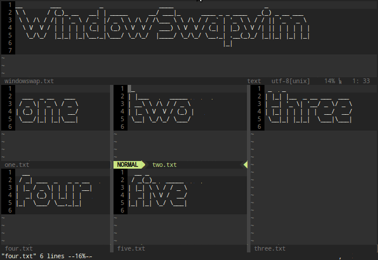

How can I swap positions of two open files (in splits) in vim?
Assume I've got some arbitrary layout of splits in vim.
____________________ | one | two | | | | | |______| | | three| | | | |___________|______|
Is there a way to swap one and two and maintain the same layout? It's
simple in this example, but I'm looking for a solution that will help for more
complex layouts.
UPDATE:
I guess I should be more clear. My previous example was a simplification of
the actual use-case. With an actual instance: 
How could I swap any two of those splits, maintaining the same layout?
Update! 3+ years later...
I put sgriffin's solution in a Vim plugin you can install with ease! Install it with your favorite plugin manager and give it a try: WindowSwap.vim

Answer
A bit late to the post, but came across this searching for something else. I wrote two functions awhile back to mark a window and then swap buffers between windows. This seems to be what you're asking for.
Just slap these in your .vimrc and map the functions how you see fit:
function! MarkWindowSwap() let g:markedWinNum = winnr() endfunction function! DoWindowSwap() "Mark destination let curNum = winnr() let curBuf = bufnr( "%" ) exe g:markedWinNum . "wincmd w" "Switch to source and shuffle dest->source let markedBuf = bufnr( "%" ) "Hide and open so that we aren't prompted and keep history exe 'hide buf' curBuf "Switch to dest and shuffle source->dest exe curNum . "wincmd w" "Hide and open so that we aren't prompted and keep history exe 'hide buf' markedBuf endfunction nmap <silent> <leader>mw :call MarkWindowSwap()<CR> nmap <silent> <leader>pw :call DoWindowSwap()<CR>
To use (assuming your mapleader is set to \) you would:
- Move to the window to mark for the swap via ctrl-w movement
- Type \mw
- Move to the window you want to swap
- Type \pw
Voila! Swapped buffers without screwing up your window layout!
Suggest
A bit late to the post, but came across this searching for something else. I wrote two functions awhile back to mark a window and then swap buffers between windows. This seems to be what you're asking for.
Just slap these in your .vimrc and map the functions how you see fit:
function! MarkWindowSwap() let g:markedWinNum = winnr() endfunction function! DoWindowSwap() "Mark destination let curNum = winnr() let curBuf = bufnr( "%" ) exe g:markedWinNum . "wincmd w" "Switch to source and shuffle dest->source let markedBuf = bufnr( "%" ) "Hide and open so that we aren't prompted and keep history exe 'hide buf' curBuf "Switch to dest and shuffle source->dest exe curNum . "wincmd w" "Hide and open so that we aren't prompted and keep history exe 'hide buf' markedBuf endfunction nmap <silent> <leader>mw :call MarkWindowSwap()<CR> nmap <silent> <leader>pw :call DoWindowSwap()<CR>
To use (assuming your mapleader is set to \) you would:
- Move to the window to mark for the swap via ctrl-w movement
- Type \mw
- Move to the window you want to swap
- Type \pw
Voila! Swapped buffers without screwing up your window layout!